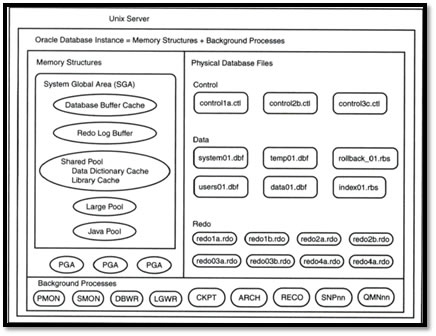
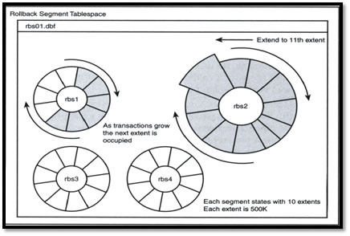
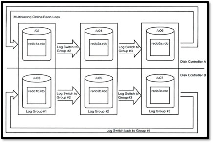
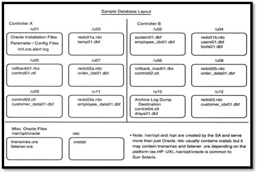
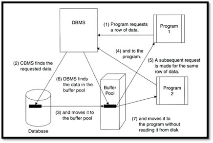
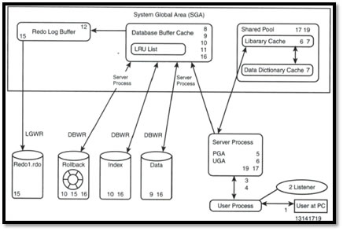

Arquitectura de un manejador de bases de datos (DBMS)
Una base de datos en ejecución consta de 3 cosas:
Archivos
-Control (ctl): almacenan información acerca de la estructura de archivos de la base.
-Rollback (rbs): cuando se modifica el valor de alguna tupla en una transacción, los valores nuevos y anteriores se almacenan en un archivo, de modo que si ocurre algún error, se puede regresar (rollback) a un estado anterior.
-Redo (rdo): bitácora de toda transacción, en muchos dbms incluye todo tipo de consulta incluyendo aquellas que no modifican los datos.
-Datos (dbf): el tipo más común, almacena la información que es accesada en la base de datos.
-Indices (dbf) (dbi): archivos hermanos de los datos para acceso rápido.
-Temp (tmp): localidades en disco dedicadas a operaciones de ordenamiento o alguna actividad particular que requiera espacio temporal adicional.
Memoria
-Shared Global Area (SGA): es el área más grande de memoria y quizás el más importante.
-Shared Pool: es una caché que mejora el rendimiento ya que almacena parte del diccionario de datos y el parsing de algunas consultas en SQL.
-Redo Log Buffer: contiene un registro de todas las transacciones dentro de la base, las cuales se almacenan en el respectivo archivo de Redo y en caso de siniestro se vuelven a ejecutar aquellos cambios que aún no se hayan reflejado en el archivo de datos (commit).
-Large Pool: espacio adicional, generalmente usado en casos de multithreading y esclavos de I/O.
-Java Pool: usado principalmente para almacenar objetos Java.
-Program Global Area (PGA): información del estado de cursores/apuntadores.
-User Global Area(UGA): información de sesión, espacio de stack
Procesos
-Threading
-System Monitor: despierta periódicamente y realiza algunas actividades entre las que se encuentran la recuperación de errores, recuperación de espacio libre en tablespaces y en segmentos temporales.
-Process Monitor: limpia aquellos procesos que el usuario termina de manera anormal, verificando consistencias, liberación de recursos, bloqueos.
-Database Writer: escribe bloques de datos modificados del buffer al disco, aquellas transacciones que llegan a un estado de commit.
-Log Writer: escribe todo lo que se encuentra en el redo log buffer hacia el redo file.
-Checkpoint: sincroniza todo lo que se tenga en memoria, con sus correspondientes archivos en disco
Instancia de una bd en Oracle

Rotación de segmentos de rollback

Rotación de bitácoras de Redo

Ejemplo del esquema de una base de datos en Oracle

Utilización del Shared Pool

Ejemplo del control de transacción
